One recommendation, not three diluted concepts. Nothing site-wide has changed:
the navigation still carries the rejected Threshold mark until this direction is approved.
What the old reference contributes, and what it does not. The WhatsApp badge is a
low-resolution raster and was never a production logo file. Nothing here is traced from it.
What survives is the idea: a constructed, interlocking Z and A with a confident studio
silhouette. What is deliberately gone: the 3D gold bevel, the glow, the black circular badge,
the reflection, the stock-luxury feel and the unreadable subtitle.
1 · The three marks, side by side
Brand history — reference only
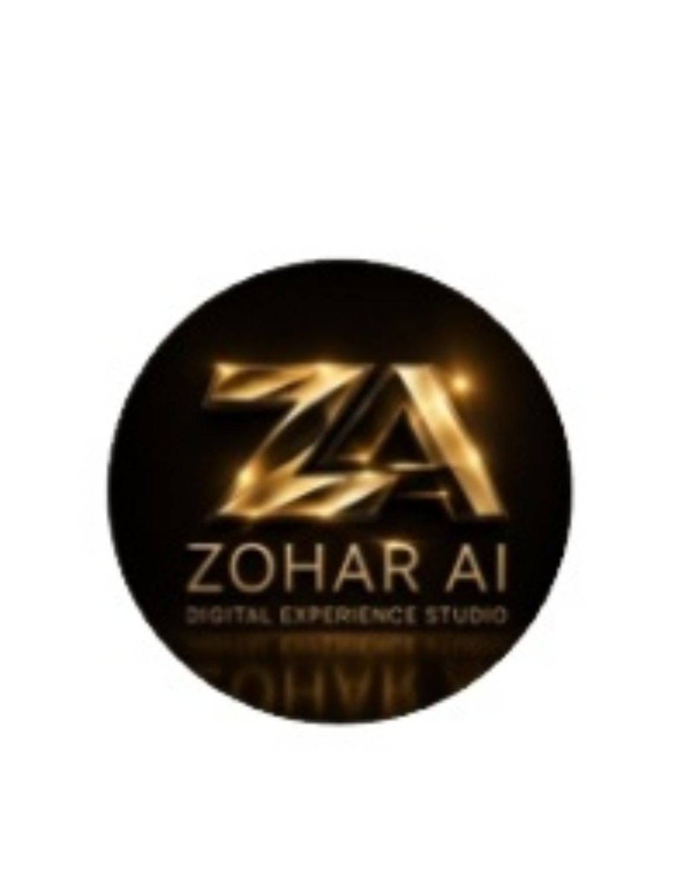
WhatsApp badge
Gold bevel, glow, black circle, reflection, tiny subtitle. Low-resolution raster — not a logo file.
Rejected
Threshold
Currently in the navigation. Reads as a generic app tile at small sizes and carries no Z or A.
Recommended
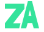
ZA Monolith
The A's plane passes through the Z's base, cut on a parallel line. One joint, one incision, one silhouette.
2 · How it is constructed
The Z is one folded plane: cap, diagonal, base. The A rises from exactly where that base ends,
and the base is cut on a line parallel to the A's leading edge, leaving a precise 2.6-unit
incision. That shared joint is what makes it a constructed mark rather than two letters standing
next to each other. The A's apex sits above the Z's cap height — the asymmetry is
deliberate and is what makes the silhouette ownable.
All terminals are flat cuts. No miter spikes, no rounded caps, no bevel, no gradient, no glow.
No circle, no container, no badge. The mark holds its own shape.
Emerald is primary. Brass appears only as an optional accent on the A, never as the default.
Emerald — primary
The default, everywhere.
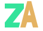
Brass accent — optional
Restrained premium use only. Never the default.
One colour — dark ground
Single fill. No colour dependency.
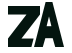
One colour — light ground
The same geometry, inverted.
3 · Small sizes — the real test
Rendered at true pixel size. The counters in the Z and the A must survive.
96px
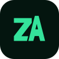
44px app icon
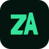
32px favicon16px favicon16px bare
4 · Lockups
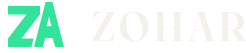
Horizontal — navigation
The primary lockup.
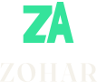
Stacked
For square and centred placements.
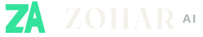
ZOHAR AI — secondary
Company and schema name. Visible brand stays ZOHAR.
Wordmark
Real outlined vector, drawn from the committed display face.
5 · In place — dark and light navigation
WorkMethodOfferContact
WorkMethodOfferContact
6 · Social mark
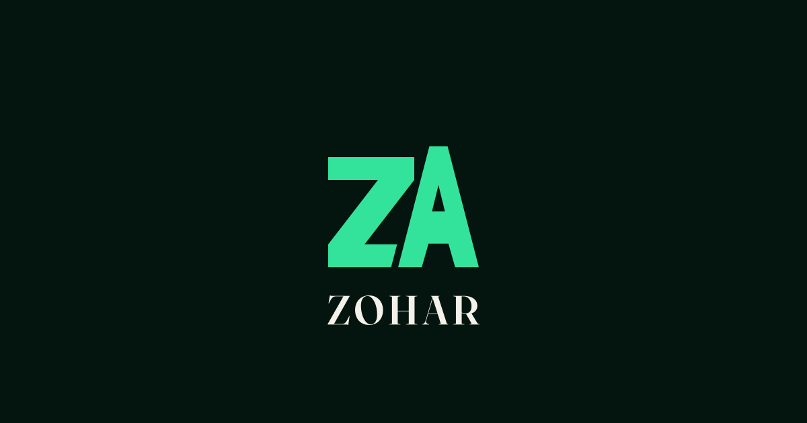
1200×630. No badge, no reflection, no subtitle.
7 · Motion principle, and the static state
The static mark is the default and the complete state. Everything below is optional and
additive — the logo is never assembled from nothing, so it can never appear broken or empty.
One principle: the incision between the Z's base and the A's leading edge brightens
once, left to right, and settles. That is the whole idea — the threshold catching light.
Runs once per page load, ~700ms, never loops, never on hover, never in navigation.
Reserved for the pre-footer brand moment and the social/launch context. Never at 16–44px,
where it would be invisible and would only cost a repaint.
Under prefers-reduced-motion it is not scheduled at all — the static mark is
already the finished artwork, so there is nothing to fall back to.
Static / reduced-motion
Identical to the default. This is the artwork, not a fallback.
Accent at rest
Where the incision would catch light, shown statically.
8 · Delivered files
File
Use
symbol-emerald.svg
Primary symbol
symbol-brass.svg
Optional brass accent
symbol-mono-dark.svg · symbol-mono-light.svg
One-colour, either ground
wordmark.svg
ZOHAR wordmark, outlined vector
lockup-horizontal.svg · -mono-light.svg
Navigation lockup, both grounds
lockup-stacked.svg
Stacked lockup
lockup-zohar-ai.svg
ZOHAR AI secondary lockup
favicon.svg · favicon-mono.svg
16px and 32px favicon
appicon-44.svg
44px app icon
social-mark.svg
1200×630 social mark
Nothing is live. The site-wide mark is unchanged and will stay the Threshold until you
approve this direction. On approval the swap is a single sprite replacement plus the favicon and
social references — the lockups are already sized to the current navigation.